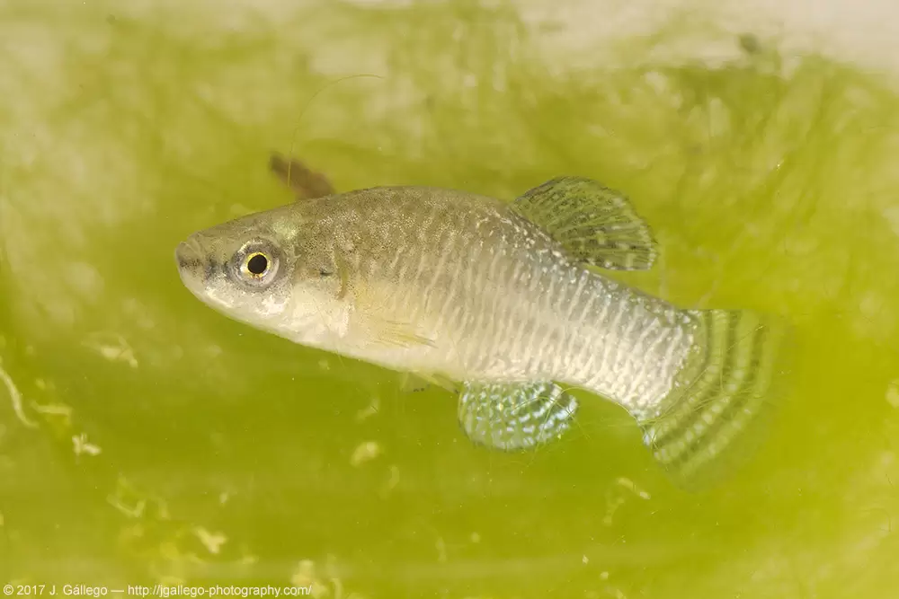

Águila perdicera
Catalogado a nivel regional como Especie en peligro de extinción. Anexo I, Ley 7/95, de 21 de abril, de la Fauna Silvestre de la Región de Murcia. A nivel nacional: Anexo I. Especies y subespecies catalogadas «en peligro de extinción». Real Decreto 439/90 por el que se regula el Catálogo General de Especies Amenazadas A nivel europeo: Anexo II. Directiva 92/43/CEE del Consejo, de 21 de mayo, relativa a la conservación de los hábitats naturales y de la fauna y flora silvestres
Hábitat:
Vive en ambientes acuáticos: charcas, lagunas litorales, salinas, ríos, etc. Se puede encontrar en aguas con un contenido en sal muy variable, de agua dulce a hipersalinas.
Distribución:
Especie restringida al litoral mediterráneo español, las Marismas del Guadalquivir y el Noroeste de Argelia.
Población:
Su presencia está limitada a una serie de salinas, charcas y zonas de aguas someras de la ribera del Mar Menor, así como en las Salinas de Calblanque. También se encuentra en el curso medio del río Chícamo.